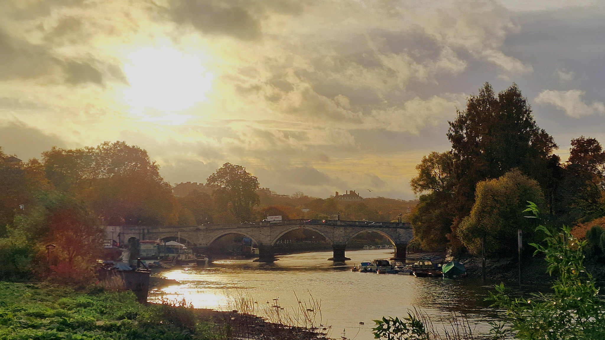

Places and landscapes
Follow the river and discover its origins in the hills and ground beneath you. Float through the natural beauty of its landscapes. See the power and character of the river change as it is fed by its tributaries.
An atlas and guide to rivers anywhere in the world
Discover the places, wildlife, history, watersports, boating and live river conditions that make every river and canal a delight.
Starting in Britain. Built for rivers anywhere in the world.
Get updatesWhy an atlas and guide?
We believe the more you understand them, the more you can enjoy them. That leads to a deeper care for them and a thirst for more knowledge.

See EveryRiver in action
Atlas and guide
EveryRiver brings fragmented knowledge together to tell the whole story of a river or canal. It combines information from public authorities with community knowledge and guidance. It is designed for laptop, PC and mobile phones.
Follow the river and discover its origins in the hills and ground beneath you. Float through the natural beauty of its landscapes. See the power and character of the river change as it is fed by its tributaries.
Explore species, habitats and nature observations connected to each stretch of river.
Understand how our lives, buildings, events and language have been shaped by the water.
Give and receive guidance on walking, paddling, boating, swimming, fishing and just idly spending time by the river.
See river levels, flows, rainfall, tides, weather, water quality and other changing conditions.
Learn more about rivers and canals and give others the benefit of your knowledge. Add your favourite books, explain how things work, verify, update, challenge and edit, for the benefit of future generations.
Including data provided or published by:
Figures checked July 2026.
Knowledge connected
River and canal knowledge is scattered across maps, datasets, encyclopaedias, field observations and local experience. EveryRiver brings them to you as one, so you can easily understand and enjoy them more.
Information from Wikipedia, Wiktionary and iNaturalist is included within the atlas and guide.
Sources and provenance remain visible, so knowledge can be checked, understood and improved.
EveryRiver is not a finished atlas being prepared behind closed doors. It is a library that will grow through the knowledge, experience and creativity of its community.
Sign up for updates and information about how to get involved.
Get updatesCreated for public benefit
EveryRiver will be a permanent, open, objective and independent source of information.
EveryRiver is constitutionally not for profit and exists solely for public benefit.
Our information will always be free.
EveryRiver will be funded by private donations, not commercial income.
Information created by EveryRiver will be open data, following FAIR principles.
Read our constitutional commitments and approach to open data
Roadmap
Private testing is invitation only and places are limited. The newsletter is the best way to follow progress and hear how to get involved.
Testing the atlas and guide with a small group.
Improving the experience, knowledge and contribution tools.
Opening EveryRiver more widely.